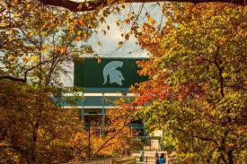

Michigan's Trees
Published: September 28, 2025 | Author: Molly Scherer
The fall season in Michigan is a truly beautiful time. It brings color and festivity to many parts of the state. Especially in the northern parts of the state, people are able to visit apple orchards, go for hikes, and drive on tree lined highways to take in the colors. In the beginning of fall, I appreciate that the weather is still warm enough to be outside and enjoy the changing leaves.
Being a college student at Michigan State, I feel very lucky to constantly be surrounded by the colors of fall. The campus is filled with trees that change, and it is always nice to walk to class and see the beautiful colors. As it gets chillier, it's nice to get a hot coffee and see the trees from a library window while studying.